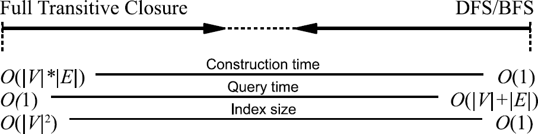

Reachability index
Label-Only and Label+Graph approaches
Reachability query is one of the fundamental graph operations to answer whether a vertex (also called a node) can reach another vertex over a large directed graph. Usually directed acyclic graphs (DAGs) are considered, as reachability query in original graph can be answered by taking graph of strongly connected components (which is acyclic) and answering the translated query there.
Let \(G = (V,E)\) be a directed graph, with \(V\) being its set of vertices and \(E \subseteq V^2\) its set of edges. A reachability query \(r(u, v)\) asks whether a vertex \(v \in V\) is reachable from a vertex \(u \in V\), i. e., whether there is a path from \(u\) to \(v\) in \(G\).
The main idea behind the various considered approaches in the literature is to compute a label for every vertex in a graph \(G\), by precomputing them offline. This is known as the index construction (there is constructed an index to maintain the mapping from vertices to labels). The index construction takes time, and storing the labels takes space.
The various methods to speed up reachability queries can be divided into two main categories (approaches), namely Label-Only and Label+G (or Label+Graph).
Label-Only approaches (as the name indicates) answer reachability queries using only the labels. Those have index size which is nonlinear function of the number of vertices (nodes), or have unbound index size.
Label+Graph approaches use labels computed where possible, and conduct on-line search (be it depth-first search (DFS), breadth-first search (BFS), or bidirectional BFS) at run-time, if the reachability queries cannot be answered using the labels only. This class of methods is also called Refined Online Search.
All the approaches take a different way to balance the three main costs, namely, - the index construction time, - the index size, and - the query time.
NOTE: this is considered exploratory notebook, so the above text lack citations.

The two basic approaches on extremes of a spectrum are shown on the figure above.
The first approach (left side) is to pre-compute and store the full transitive closure of edges, which allows constant time queries, but requires a quadratic space complexity, making it infeasible to maintain the index in the case of very large graphs. - index build time: \(\mathcal{O}(|V|*|E|)\) - query answering time: \(\mathcal{O}(1)\) (constant time) - index size: \(\mathcal{O}(|V|^2)\) (quadratic memory size)
The second approach (right side) is to employ a DFS or BFS, or bidi-BFS search to verify the reachability, starting from vertex \(u\) to vertex \(v\). This approach requires \(O(|V| + |E|)\) time for each query, which is often unacceptable. - index build time: \(\mathcal{O}(1)\) (no build time) - query answering time: \(\mathcal{O}(|V|+|E|)\) - index size: \(\mathcal{O}(1)\) (no additional memory needed)
Types of labels in augmented online search algorithms (Label+G)
In Label+Graph approach we conduct graph search if the reachability query cannot be answered using the labels only. In most methods those labels are then used to limit the search space (to augment the search to make if faster).
Two main types of labels are those that - exclude unreachable nodes, thus working as negative-cut filter, - find reachable nodes, thus working as positive-cut filter
In this case, usually one can define partial order between given labels, that is for vertices \(u\) and \(v\) we can have \(l(u) \preceq l(v)\), or \(l(u) \succeq l(v)\), or labels are incomparable (where \(l(u)\) is the label for vertex \(u\)).
Negative-cut filter
This type of filter (or reachability label) can be used to exclude unreachable nodes.
- for every \(u\) and \(v\), if \(u \neq v\) and \(u\) can reach \(v\), that is \(r(u,v)\) holds, then we have \(l(u) \preceq l(v)\)
- therefore if the condition \(l(u) \preceq l(v)\) is not met, then \(u\) cannot reach \(v\) (there is no path from \(u\) to \(v\))
- the reverse is not always true; there can be false positives
Positive-cut filter
This type of filter (or reachability label) can be used to find when nodes are reachable one from the other
- if for \(u \neq v\) we have \(l(u) \preceq l(v)\), then \(r(u,v)\) is true, that is \(u\) can reach \(v\)
- \(v\) can be reachable from \(u\) even if the condition is not met (\(l(u) \not\preceq l(v)\)): false negative
Git-specific considerations
For reachability label to be considered for being added to Git (or more accurately to the git commit-graph file format it must work for large graphs.
- Linux kernel: 826 000 commits (2019)
- MS Windows: 3 100 000 commits (2019)
- Android (AOSP): 874 000 commits (2019)
- Chromium: 772 000 commits (2019)
The commit graph (also known as revision graph) in version control systems is not static; it grows, but in very specific way. It grows by adding vertices (nodes), while existing vertices are immutable - with the sole exception that commits that are not reachable from one of the entry points (branches and tags) are removed during the garbage collection (gc) step.
There is no adding of edges (only as a byproduct of adding nodes), and no deletion of nodes.
Because the commit graph grows in size with time, we would like for reachability label to be able to be computed incrementally.
This could mean either that the reachability label is immutable itself, that is it would not change with the node-addition only growth of the graph. It could also mean that existing labels can be cheaply updated with the growth of the commit graph.
TODO: the problem of layers of commit graph, see slides